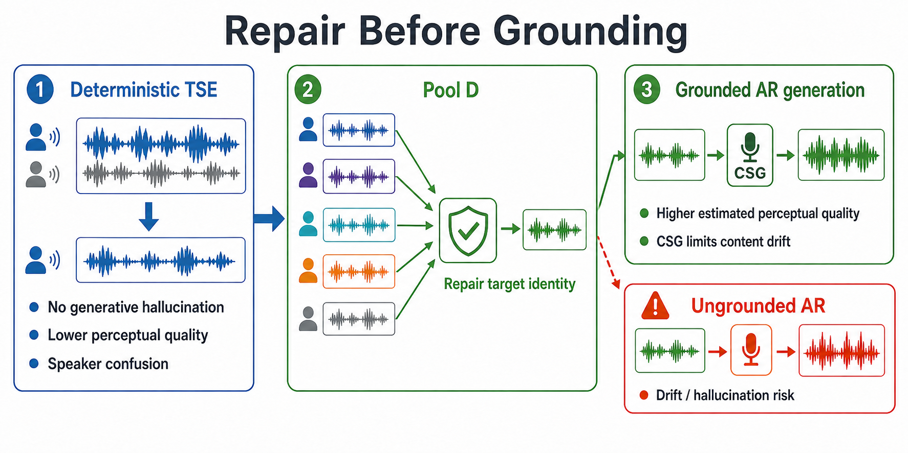

Q-Full proposes
Raw logits rank the next token. A fluent high-score proposal may still drift from the evidence.
EvidenceRaw proposal
02110201
22012200
ICASSP 2027 · Audio demo
Repair the target-speaker evidence first; then constrain the optional LLM speech generator.
Status: Frozen Noisy TEST and all reported Clean TEST rows are complete.
Two failures are easy to conflate. A deterministic waveform TSE system does not introduce autoregressive token hallucination, but under noise it may sound distorted or extract the wrong speaker. An autoregressive speech model can raise estimated perceptual quality, yet its learned prior can change words or speaker identity. Our rule is therefore simple: repair the target evidence first, then ground generation on that repaired evidence.

Pool D selects the most enrollment-consistent waveform from five frozen, conditioning-diverse TSE candidates. It can be returned directly as the content-fidelity endpoint, or tokenized as evidence for Q-Full. The Q-Full speech prior supplies the estimated-quality gain; CSG keeps its next-token choices close to the repaired evidence. This ordering matters: CSG limits generation drift, but cannot repair a wrong-speaker anchor by itself.
The speech tokenizer represents each acoustic token with eight ternary FSQ coordinates. Grounding changes token selection inside Q-Full; it does not change the Pool D selector.
Raw logits rank the next token. A fluent high-score proposal may still drift from the evidence.
Hamming-distant candidates receive a larger penalty, pulling generation toward nearby evidence.
Top-20 proposals are intersected with a radius-2 Hamming ball around the immutable CSG anchor.
Each example isolates one part of the story. Clean targets and interferers are provided only for interpretation; the deployed system never receives them.
The primary follows the interferer. A deterministic two-second enrollment view produces target-consistent evidence. WER: 100% → 0%; speaker margin: −.285 → +.520.
Frozen clean-reference transcript · Whisper-small.en; evaluation only
The speaker-vector candidates fail, but the alternative conditioning expert recovers the target. WER: 100% → 0%; speaker margin: −.543 → +.505.
Frozen clean-reference transcript · Whisper-small.en; evaluation only
The same repaired evidence enters Q-Full. CSG reduces decoder drift, although the direct waveform remains strongest: UD 27.3%, CSG 9.1%, Pool D direct 0% WER.
Frozen clean-reference transcript · Whisper-small.en; evaluation only
Why grounding matters: the ungrounded AR decoder substitutes plausible words (“stove”, “maam”); CSG keeps the output closer to the repaired evidence and removes most of that content drift.
Noisy TEST listening cases are not yet published. They will be selected from the completed frozen outputs by the predeclared deterministic rule, not by manual cherry-picking.
Frozen natural-noise TEST, 6,000 trials from the one permitted run.
| System | WER ↓ | C-sw. ↓ | A-sw. ↓ | Spk. margin ↑ | DNSMOS OVRL ↑ | UTMOS ↑ |
|---|---|---|---|---|---|---|
| Primary WeSep | 46.17 | 15.57 | 14.57 | .304 | 2.291 | 2.061 |
| Pool D direct | 35.64 | 7.95 | 7.17 | .363 | 2.201 | 1.990 |
| Pool D → Q-Full UD | 58.00 | 10.13 | 1.68 | .378 | 3.086 | 3.253 |
| Pool D → fixed CSG | 53.90 | 9.48 | .52 | .386 | 3.082 | 3.147 |
| Pool D → CSG (λ=.5, w=1; nominal adaptive) | 50.99 | 9.72 | .98 | .384 | 3.093 | 3.196 |
| Pool D → CSG (λ=.5, w=1) → GNR (K20/R2) | 54.79 | 9.65 | .98 | .384 | 3.095 | 3.207 |
Reading. Pool D is the strongest content-fidelity endpoint. Inside the generative branch, fixed CSG improves WER and acoustic speaker consistency over unconstrained Q-Full, but no generated condition overtakes Pool D direct on WER.
WER: uncapped utterance-mean ASR-consistency WER against same-ASR clean-target transcripts.
C-sw.: output content is closer to the interferer transcript than the target transcript.
A-sw.: output speaker similarity favours the interferer over the enrolled target.
C-sw. and A-sw. are operational metrics defined for this study.
Frozen held-out evaluation, 6,000 trials.
| System | WER ↓ | C-sw. ↓ | A-sw. ↓ | Spk. margin ↑ | DNSMOS P.808 ↑ |
|---|---|---|---|---|---|
| Primary WeSep | 13.68 | 7.00 | 6.98 | .449 | 3.688 |
| Pool D direct | 6.54 | .88 | .78 | .506 | 3.699 |
| Pool D → Q-Full UD | 14.08 | 1.00 | .43 | .422 | 3.705 |
| Pool D → fixed CSG | 12.74 | 1.00 | .23 | .422 | 3.699 |
| Pool D → CSG → GNR (K20/R2) | 13.43 | 1.07 | .23 | .423 | 3.702 |
Frozen selection set: 6,000 natural and 2,400 controlled mixtures.
| System | WER ↓ | C-sw. ↓ | A-sw. ↓ | Spk. margin ↑ | DNSMOS OVRL ↑ | UTMOS ↑ |
|---|---|---|---|---|---|---|
| Primary WeSep | 53.50 | 20.11 | 19.54 | .269 | 2.243 | 1.997 |
| Pool D direct | 46.75 | 11.86 | 10.93 | .332 | 2.132 | 1.930 |
| Pool D → Q-Full UD | 66.87 | 13.68 | 2.99 | .362 | 3.063 | 3.164 |
| Pool D → fixed CSG | 62.66 | 13.44 | 1.27 | .370 | 3.066 | 3.047 |
| Pool D → CSG (λ=.5, w=1; nominal adaptive) | 62.92 | 13.42 | 1.64 | .369 | 3.079 | 3.104 |
| Pool D → CSG (λ=.5, w=1) → GNR (K20/R2) | 65.96 | 13.44 | 1.67 | .369 | 3.081 | 3.118 |

Recovery rises at 10–15 dB, where wrong-speaker extraction remains identifiable and complementary target evidence is still usable. Across Noisy DEV, selected recovery is 54.87%, the five-candidate oracle ceiling is 62.55%, and control regression is .391%.
| Configuration | Candidates | Q-Full | RTF ↓ | Peak VRAM | Swap recovery ↑ |
|---|---|---|---|---|---|
| Primary | 1 | — | .057 | 20.37 GiB | 0.00% |
| Pool B direct | 2 | — | .105 | 20.38 GiB | 83.21% |
| Pool D direct | 5 | — | .208 | 20.47 GiB | 87.65% |
| Pool B + CSG | 2 | 1 pass | .473 | 20.38 GiB | 79.01% |
| Pool D + CSG | 5 | 1 pass | .573 | 20.47 GiB | 80.74% |